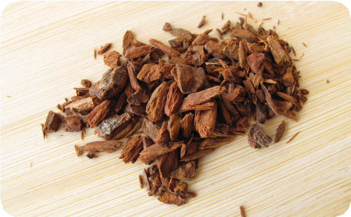
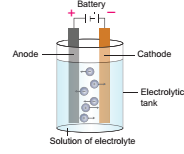
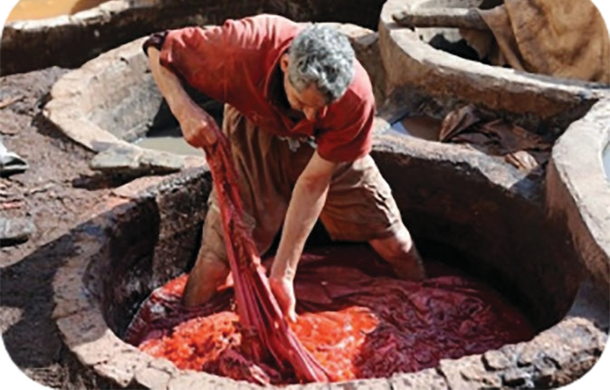
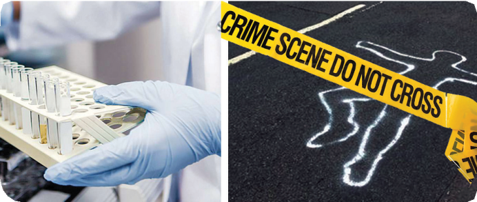

After completing this lesson, students will able to:
understand the various branches of applied chemistry.
know the technology of Nanochemistry.
know the various types of drugs.
understand the various uses of electrochemistry.
understand the applications of radiochemistry.
understand various types of dyes and their application.
acquire knowledge about food chemistry and agricultural chemistry.
understand some basic ideas about forensic chemistry.
Food, medicines, cosmetics, dress materials and gold covering ornaments are some of the items used in our day to day life. They may differ in nature and applications. But all these are associated with chemistry. They are made of synthetic / natural chemicals.
We face lot of difficulties in different means to lead our day to day life. Such difficulties make chemists to come out of new ideas and theories. For example, when people suffered from diseases, new chemical compounds were synthesized and used as drugs. New techniques were also developed to diagnose diseases. When farmers suffered due to low crop yield and pest-related problems in crop field, chemists developed new chemical fertilizers and pesticides to combat these issues. Thus chemical principles and theories are applied to various fields in order to achieve specific results or to solve real-world problems. This is called applied chemistry. In this lesson, let us discuss various branches of applied chemistry and their significance.
We know that the size and shape of materials influence their characteristics. Scientists found that materials having size about 1 by 1,000,000,000 metre show special characteristics. Then they started producing such kind of materials and studied the effect of size on properties. Thus a new branch of chemistry called 'Nanochemistry was developed.
Nanochemistry is a branch of nanoscience, that deals with the chemical applications of nanomaterials in nanotechnology. It involves synthesis and manipulation of materials at atomic and molecular level and the study of their physical and chemical properties.
The word, Nano has been derived from the Greek word 'Nanos' which is designated to represent billionth fraction of a unit. For instance, 1 Nanometre = 1 by 1,000,000,000 metre. Can you imagine how small is a nanoparticle question mark
The following examples may help to illustrate how small the nanoscale is.
One nanometre Bracket OPEN nm bracket closed is 10 power minus 9 or 0.000000001 metre.
A nanometre and a metre can be understood as the same size-difference as between golf ball and the Earth.
Our nails grow 1 nm each second.
The virus most usually responsible for the common cold has a diameter of 30 nm.
A cell membrane is around 9 nm across.
The DNA double helix is 2 nm across.
The diameter of one hydrogen atom is around 0.2 nm.
Nanomaterials have the structural features in between those of atoms and the bulk materials. The properties of materials with nanometre dimensions are significantly different from those of atoms and bulk materials. This is mainly because the nanometre size of the materials render them, larger surface area, high surface energy, spatial confinement and reduced imperfections, which do not exist in the corresponding bulk materials. As the surface characteristics of nanoparticles are the main criteria to be considered for applications, highly sophisticated instruments like Scanning Electron Microscope Bracket OPEN SEM bracket closed, Tunneling Electron Microscope Bracket OPEN TEM bracket closed and Atomic Force Microscope Bracket OPEN AFM bracket closed are used to analyse the surface properties of a nanoparticle with high resolution.
The range of commercial products available today is very broad, including stain resistant and wrinkle-free textiles, cosmetics, sun screens, electronics, paints and varnishes. Nanochemistry is applied in all these substances. Some of them are given below.
The metallic nanoparticles can be used as very active catalysts.
Nano coatings and nanocomposites are found useful in making variety of products such as sports equipment, bicycles and automobiles etc.
Nanotechnology is applied in the production of synthetic skin and implant surgery.
Nanomaterials that conduct electricity are being used in electronics as minute conductors to produce circuits for microchips.
Nanomaterials have extensive applications in the preparation of cosmetics, deodorants and sun screen lotion.
Nanoparticle substances are incorporated in fabrics to prevent the growth of bacteria.
Nanochemistry is used in making space, defence and aeronautical devices.
Nanoparticles are unstable when they react with oxygen.
Their exothermic combustion with oxygen can easily cause explosion.
Because nanoparticles are highly reactive, they inherently interact with impurities as well.
Nanomaterials are biologically harmful and toxic.
It is difficult to synthesis, isolate and apply them.
There are no hard-and-fast safe disposal policies for nanomaterials.
Pharmaceutical chemistry is the chemistry of drugs which utilizes the general laws of chemistry to study drugs. Pharmaceutical chemistry deals with preparation of drugs and the study of chemical composition, nature, behaviour , structure and influence of the drug in an organism, condition of their storage and the therapeutic uses of the drugs. Drug discovery is the core of pharmaceutical chemistry.
Even though we use so many chemicals in our daily life, the chemicals used for treating diseases are termed as drug. The word drug is derived from the French word 'droque' which means a dry herb.
According to World Health Organisation, a drug is defined as follows: 'It is a substance or product that is used or intended to be used to modify or explore physiological systems or pathological states for the benefits of the recipient'.
A drug must possess the following characteristics:
It should not be toxic.
It should not cause any side effects.
It should not affect the receptor tissues.
It should not affect the normal physiological activities.
It should be effective in its action.
The main sources of drugs are animals and plants. The modern manufacturers adopt many chemical strategies to synthesize drugs for specialized treatments which are more uniform than natural materials. The following table shows various sources of drugs.
Table 16.1 Sources of drugs was given below
Source or Process |
Drug |
Plants |
Morphine, Quinine |
Chemical Synthesis |
Aspirin, Paracetamol |
Animal |
Insulin, Heparin |
Minerals |
Liquid Paraffin |
Microorganism |
Penicillin |
Genetic Engineering |
Human growth Hormone |
Drugs fall into two general categories:
1bracket closed The drugs that are used in the treatment and cure of any specific disease.
2bracket closed The drugs that have some characteristic effect on the animal organism, but do not have any remedial effect for a particular disease. This class includes, morphine, cocaine etc.
The drugs which cause loss of sensation are called Anaesthetics. They are given to patients when they undergo surgery.
When patients undergo a major surgery in internal organs, some anaesthetics are given so that they lose sensation completely. But when they undergo a minor surgery in a specific part of the body, anaesthetic is given to loose sensation around that particular part. Based on this, there are two classes of anaesthetics as given below.
General anaesthetics: They are the agents, which bring about loss of all modalities of sensation, particularly pain along with ‘reversible’ loss of consciousness. For example, when a surgery is carried out on internal organs, these anaesthetics are given. The patient loses consciousness for specific period of time Bracket OPEN depending on the duration of surgery bracket closed and get it back later.
Local anaesthetics: They prevent the pain sensation in localised areas without affecting the degree of consciousness. For example, dentist give patients this kind of anaesthetics when carry out a minor surgery in teeth.
There are three major chemicals which are used as anaesthetics. They are:
Nitrous Oxide Bracket OPEN N2O bracket closed: It is a colourless, nonirritating, inorganic gas. It is the safest of the anaesthetic agents. This is used after mixing general anaesthetics like ether.
Chloroform Bracket OPEN CHCl3 bracket closed: It is a volatile liquid. It has pleasant smell and sweet taste. With oxygen it forms a toxic carbonyl chloride. Hence it is not used now
Ether: Diethyl ether or simple ether Bracket OPEN C2H5 single bond –O– single bond C2H5bracket closed is a volatile liquid. This is mixed with a stabilizer, 0.002 percent propyl halide. After absorption by tissues it attacks the central nervous system and makes the patient unconscious
Analgesics are the compounds which relieve all sorts of pains without the loss of consciousness. These are also called as pain killer or pain relievers. These are effective in healing headaches, myalgia and arthralgia.
Aspirin and Novalgin are the commonly used analgesics. Aspirin acts both as antipyretic as well as analgesic. Certain narcotics Bracket OPEN which produce sleep and unconsciousness bracket closed are also used as analgesics. The analgesics are given either orally or applied externally. In general, externally applicable pain killers come as ‘gels’.
Antipyretics are the compounds which are used for the purpose of reducing fever Bracket OPEN lowering the body temperature to the normal bracket closed. They are taken orally as tablets and capsules. The most common antipyretics are, aspirin, antipyrine, phenacetin, and paracetamol.
Antiseptic is a substance that prevents infections caused by disease causing microorganisms or pathogens. Antiseptics either kill the micro-organism or prevent their growth. Antiseptics are used externally to cleanse wounds and internally to treat infections of the intestine and bladder.
Iodoform Bracket OPEN CH I 3bracket closed is used as an antiseptic and its 1 percent solution is a disinfectant.
0.2 percent solution of phenol acts as an antiseptic and its 1 percent solution is a disinfectant.
Hydrogen peroxide is a minor antiseptic mainly used for cleansing wounds.
Malaria is a vector borne disease which causes shivering and fever. It raises the body temperature to 103-106 °F. It causes physical weakness with the side-effects in liver and also causes anaemia.
Extracts of roots and stems of certain plants are extensively used as antimalarial. Quinine is a natural antimalarial obtained from Cinchona bark. The last antimalarial discovered in 1961 is pyrimethamine. However, quinine, primaquine and chloroquine are some of the best antimalarials. Chloroquine is used specially to control malarial parasites such as plasmodium ovale, plasmodium vivax etc. It is not used in curing the disease. It is used as an additive with other antimalarial drugs.
Figure 16.1 Cinchona Bark image was given below

Many microorganisms Bracket OPEN bacteria, fungi and molds bracket closed produce certain chemicals which inhibit the growth or metabolism of some other disease causing micro organisms. Such chemical compounds are known as antibiotics. These need to be present only in low concentration to be effective in their antibiotic action. The first antibiotic ‘penicillin’ was discovered by Alexander Fleming in 1929, from the mold Penicillium notatum. Penicillin is extensively used for rheumatic fever, narrowing of heart wall, bronchitis, and pneumonia etc.
There are three main sources of antibiotics: Bracket OPEN1bracket closed Bacteria Bracket OPEN2bracket closed Fungi and Bracket OPEN3bracket closed Actinomycetes. The original antibiotics, like a lot of today’s antibiotics, are derived from natural sources. Certain plant extracts essential oils, and even foods have antibiotic properties. Example: Honey, garlic, ginger, clove, neem and turmeric.
Quite often, after eating oily and spicy food, one may feel uncomfortable due to some burning sensation in stomach / food pipe. This is due to imbalance in the acidity in the stomach. Certain drug formulations provide relief from such burning sensation. These are known as antacids. Antacids are available in tablet as well as gel / syrup forms. These antacids contain magnesium and aluminium hydroxides, in addition to flavouring agents and colour.
We use so many electronic devices like mobile phone, and electrical devices like torch light, in our daily life. Electricity produced by the battery is the key factor which makes these devices to function. But how does battery produce electricity question mark Because it contains some chemicals in it. The chemical reactions Bracket OPEN chemical energy bracket closed that take place in the battery produce electricity Bracket OPEN electrical energy bracket closed. So, when scientists realized that chemical energy can be converted into electrical energy and vice versa, another branch of applied chemistry was developed. It is Electrochemistry.
Electrochemistry is a branch of chemistry which deals with the relation between electrical energy and chemical change. It is mainly concerned with the processes taking place between the electrode and solution having ions called electrolyte.
So many chemical reactions take place around us. Do all they produce electricity question mark No .
Only redox reactions that take place in a specific device can produce electricity. The device that make use of a chemical change to produce electricity or electricity to produce chemical change is called Electrochemical Cell.
An electrochemical cell may comprise of the following two major components.
Electrode: It is a solid electrical conductor made of metal Bracket OPEN sometimes non-metal like graphite bracket closed. A cell consists of two electrodes. One is called Anode and the other is called Cathode.
Electrolyte: It is made up of solutions of ions or molten salts which can conduct electricity.
An electrochemical cell involves two reactions simultaneously.
Oxidation: As we know already, an oxidation is loss of electron. In electrochemical cells, oxidation takes place at anode.
Metal gives Metal ion plus electron Bracket OPEN e minus bracket closed
Reduction: It involves gain of electron. Reduction takes place at cathode
Metal ion plus electron Bracket OPEN e minus bracket closed gives Metal
Since both the reactions take place simultaneously, the inter conversion of electrical and chemical energy in electrochemical cells involves a redox reaction.
Based on the nature of the energy conversion, electrochemical cells are broadly classified as below.
It is an electrochemical cell which converts chemical energy into electrical energy That is it produces electricity from chemical reactions.
It consists of two half cells namely anodic half-cell and cathodic half-cell.
In anodic half-cell, the anode is in contact with its electrolyte whereas in cathodic half-cell, the cathode is in contact with its electrolyte.
The anode and cathode are connected by a conductor wire. The electrolytes of half-cells are connected through a tube containing a saturated salt solution. It is called salt bridge. Thus in galvanic cell, both the half-cells are kept separately but stay connected electrically.
How does a galvanic cell produce electricity question mark
At anode, oxidation takes place which releases electrons. These electrons are attracted by cathode and hence the electrons flowing from anode to cathode are gained in reduction reaction. As long as the redox reaction proceeds, there is a flow of electrons and hence electricity.
Box item open
With the help of your teacher, construct the galvanic cell using lemon and potato. Identity their anode, cathode and electrolyte.
Box item ends
It is an electrochemical cell which converts electrical energy into chemical energy That is in electrolytic cells, electricity is used to bring about chemical reactions.
Here, both anode and cathode are in contact with same electrolyte and thus the half-cells are not separated. As seen in galvanic cells, electrolytic cell also involves redox reaction.
Figure 16.2 Electrolytic Cell image was given below

We get electricity from galvanic cells. But electrolytic cells use electricity. Then how are they useful question mark
In electrolytic cells, when electricity is passed to the electrolyte, it dissociates into its constituent ions. These ions undergo redox reaction forming the respective elements. This phenomenon is called Electrolysis. So, electrolysis is a process by which an electrolyte is decomposed into its constituent elements by passing electricity through its aqueous solution or fused Bracket OPEN molten bracket closed state.
The subject of electro chemistry is of great significance. Some of its applications are given below
1. It has been used to discover important technical processes for the production and purification of non-ferrous metals, and for the electro- synthesis of organic compounds.
2. Electrochemistry is used to predict whether a particular reaction will occur or not.
3. The detection of alcohol in drunken drivers is possible through the electrochemical redox reaction of ethanol.
4. Production of metals like aluminum and titanium from their ores involve electrochemical reactions.
5. Lead acid batteries, lithium-ion batteries and fuel cells are based on electrochemical cells. Fuel cell is used to bring about direct conversion of chemical energy into electrical energy.
You have studied in previous chapters that elements can exist in nature as their isotopes. Isotopes are atoms with same number of protons and electrons and a different number of neutrons. Some isotopes are stable and stay forever. These are the elements that we see around us and find in nature. However, some isotopes are unstable and they undergo disintegration by losing their energy in the form of radiation. As we studied earlier, every element tries to attain stability by sharing, losing or gaining electrons Bracket OPEN octet rule bracket closed. Thus, the unstable isotopes of elements lose their energy in the form of radiation to become stable. This phenomenon is called radioactive decay. The isotope which undergoes radioactive decay is called radioactive isotope or radioisotope. This property of isotopes is known as radioactivity.
Box item open
Uranium in the ground can decay into radon gas which can be very dangerous to humans. It is thought to be the second leading isotope to cause lung cancer. Box item ends
Radiochemistry is the study of chemistry of radioactive and non-radioactive isotopes. It includes both natural and artificial isotopes. Radiochemistry mainly deals with application of radioisotopes to study the nature of chemical reactions of non-radioactive isotopes of.elements and applications of radioisotopes to various fields.
Radioisotopes can easily be detected and estimated quantitatively. So they are used in radiochemistry for various applications. Radiochemistry mainly deals with study of chemical reactions of non-radioactive isotopes using radioisotopes. In addition to that it could find applications in medical field and environmental management also. Let us list important applications of radioisotopes.
Radiocarbon dating: It is a method by which the age of fossil wood or animal is determined using C-14 isotope.
Diagnosis: Radioisotopes are found very useful to diagnose and understand many diseases
Table 16.2 Radioisotope in Diagnosis table was given below
Radioisotope |
Diagnosis used for |
Iodine-131 |
Location and detection of brain tumor, thyroid gland disorder. |
Sodium-24 |
Location of blood clot and circulation disorders, pumping action of heart. |
Iron-59 |
Diagnosis of anaemia, pregnancy disorder. |
Cobalt-60 |
Diagnosis of cancer. |
Hydrogen-3 |
Water content of the human body. |
Radiotherapy: Radioactive isotopes are used in the treatment of many diseases. This kind of treatment is called radiotherapy
Table 16.3 Radioisotope in Treatment table was given below
Radioisotope |
Treatment used for |
Gold-198 |
Cancer |
Iodine-131 |
Hyperthyroidism and cancer |
Phosphorous-32 |
Blood disorder and skin disease |
Cobalt-60 |
Cancer |
Human is always fascinated by colours, because we are living in a colourful world. We could see so many colours in plants and their flowers. We eat coloured food stuffs and use numerous coloured materials in our daily life. Do you know how do they get coloured question mark Because they contain some kind of chemicals in them which are called colourants.
The uses of colourants by mankind for painting and dyeing dates back to the dawn of civilization. Until the middle of the 19th century, all colourants applied were from natural origin. For example, inorganic pigments such as soot, manganese oxide, hematite were used as colourants. Organic natural colourants have also a timeless history of application, especially for colouring textiles. The organic compounds that are used as colourants are called dyes. These dyes are all aromatic compounds, originating from plants and also from insects, fungai and lichens.
After the evolution of modern organic chemistry, many kinds of synthetic dyes were prepared and used by mankind. Dye chemistry is the study of such kind of dyes. It provides us information on theory, structure, synthesis and applications of synthetic dyes.
All coloured compounds are not dyes. Dyes are those coloured compounds which can be firmly fixed in fabrics by chemical or physical bonding. So, a dye should have the following characteristics:
It should have a suitable colour.
It should be able to fix itself or be capable of being fixed to the fabric.
It should be fast to light.
It should be resistant to the action of water, dilute acids and alkalies.
Now a days, practically all the dyes are synthetic, and are prepared from aromatic compounds obtained from coal tar. Therefore, such dyes are sometimes called as coal tar dyes. But, they may differ in their basic structure and the way of application. So, dyes are classified in two ways: one, based on the method of application and other based on their parent structure.
Basic dyes: These are basic dyes containing basic group Bracket OPEN -single bond NH2, single bond - NHR, single bond - NR2bracket closed. They are used for dyeing animal fibres and plant fibres.
Mordant dyes or Indirect dyes: These dyes have a poor affinity for cotton fabrics and hence do not dye directly. They require pretreatment of the fibre with a mordant. Mordant Bracket OPEN latin : mordere = to bite bracket closed is a substance which can be fixed to the fibre and then can be combined with the dye to form an insoluble complex called lake. Aluminium, chromium, and iron salts are widely used as mordants. Example alizarin.
Direct dyes: They have high affinity for cotton, rayon and other cellulose fibre. So, they are applied directly as they fix firmly on the fabric. Example Congo red
Vat dyes: It can be used only on cotton and, not on silk and wool. This dyeing is a continuous process and is carried out in a large vessel called vat. So, it is called as vat dye. Example Indigo
Figure 16.3 Vat dyes image was given below

Based on the structure, dyes are classified as:
Azo dyes
Diphenyl methane dye
Triphenyl methane dye
Phthalein dye
Anthraquinone dye
Indigo dyes
Phthalo cyanine dye
Nitro and nitroso dyes
Agricultural chemistry involves the application of chemical and biochemical knowledge to agricultural production, processing of raw materials into foods and beverages, and environmental monitoring and remediation. It deals with scientific relation between plants, animals, bacteria and environment.
Indian chemists and biochemists applied their knowledge and developed modernized agricultural practices which involve use of synthetic fertilizers, genetically modified crops, and equipments. It aims at producing sufficient nutritious food and feed the population in a sustainable way while being responsible stewards of our environment and ecosystem. Based on the issues and challenges in agricultural production, agricultural chemistry mainly focusses to achieve the following:
Increase in crop yield and livestock
Improvement of food quality
Reducing cost of food production
Chemical principles and reactions are most widely used in agriculture in order to increase yield, to protect crops from diseases and to simplify the practice of agriculture. Various applications are give below.
Soil Testing: Crop lands may have different kinds of soil with varying pH. Soil pH is one of the main criteria to be considered for the selection of crop or remediation of soil. Soil testing involves determination of pH, porosity and texture.
Chemical Fertilizers: Fertilizers are chemical compounds added to crop field for supplying essential micro and macro nutrients required for crop growth. Ammonium nitrate, calcium phosphate, urea, NPK Bracket OPEN Nitrogen, Phosphorous and Potassium bracket closed, etc. are some of the fertilizers. Depending on the nature of soil, these fertilizers are used singly or as mixtures.
Pesticides and Insecticides: Crops are prone to diseases caused by pests and insects. Chemically synthesized pesticides and insecticides are used to solve these issues. Chlorinated hydrocarbons, organophosphates and carbamates are used as pesticides and insecticides.
Food is one of the basic needs of human and animal. The food we eat also are made of chemicals. Any human might require the following three kinds of food:
Body building foods: These are required for physical growth of body. Example Proteins
Energy giving foods: These are the foods that supply energy for the functioning of the parts of human body. Example Carbohydrates and Fats.
Protective foods: These protect us from deficiency diseases. Example Vitamins and Minerals
Every human requires all these three kind of foods in right proportion for the smooth functioning of the body. The diet that contain all these three foods in right proportion is called Balanced diet.
Food chemistry is the chemistry of foods which involves the analysis, processing, packaging, and utilization of materials including bioenergy for food safety and quality.
The main goal of food chemistry is to cater the needs of quality food to the population in a sustainable way. In basic research, food chemists study the properties of proteins, fats, starches, and carbohydrates, as well as micro components such as additives and flavourants, to determine how each works in a food system. In application research, they often develop new ways to use ingredients or new ingredients altogether, such as fat or sugar replacements.
Food we eat in our day to day life contains natural or synthetic chemicals. They serve different functions in human body
Nutrients: They are the most essential chemicals present in food. They are required for the growth, physiological and metabolic activities of body. They are natural or synthetic. Example Carbohydrates, proteins, vitamins and minerals.
Food additives: These are the chemicals added to food for specialized functions. The various types of additives of foods are given in Table 16.4.
Box item open
40 percent of today’s global population works in agriculture, making it the single largest employment in the world box item ends
Table 16.4 Food additives table was given below
Type of additive |
Function of the additive |
Example |
Preservatives |
They protect food from spoilage by microorganism in storage. |
Vinegar, Sodium benzoate, benzoic acid, sodium nitrite |
Colourants |
They give pleasant colours to food |
Carotenoids, Anthocyanin, Curcumin |
Artificial Sweeteners |
They add sweet taste to food |
Saccharin, Cyclamate |
Flavor enhancers |
They are used to enhance the flavour of food Items |
Monosodium glutamate, Calcium diglutamate |
Antioxidants |
They prevent the oxidation of food. They protect us against cardiovascular disease. |
Vitamin C, Vitamin E, Carotene |
Forensic chemistry applies scientific principles, techniques, and methods to the investigation of crime. Our daily newspaper is carrying a lot of news on incidents of criminal activities such as robbery, murder, sexual harassment, etc. How the crime department investigate and analyse it question mark In real life the collection and analysis of evidence involve painstaking care and rigorous application of scientific principles.
Figure 16.4 Crime detection image was given below

In general, forensic chemists work in four steps in the investigation of crime.
Collection of Evidences: They collect physical evidences such as knife, instruments, materials, etc in a systematic way and uncover their information using chemistry.
Analysis of evidences: In criminal cases, chemists analyze substances such as blood and DNA to attempt to determine when and by whom the crime was committed.
Collaboration: To solve the crime, they discuss with other fellow investigators like police officers, detective and other forensic scientists.
Report of findings: Finally, they prepare a report of the conclusion of the analysis.
The world of forensic chemistry, focusing on the theory and processes of chemistry in forensic analysis shows the role that chemistry plays in criminal investigations. The following are some methods used in crime investigation by a forensic chemistry lab.
Finger print: Finger print is one of the most important evidences in crime investigation. Fingerprints on smooth surfaces can often be made visible by the application of light or dark powder, but fingerprints on cheque or other documents are often occult Bracket OPEN hidden bracket closed. Occult fingerprints are sometimes made visible by the use of ninhydrin, which turns purple due to reaction with amino acids present in perspiration. Fingerprints or other marks are also sometimes made visible by exposure to high-powered laser light. Cyanoacrylate ester fumes from glue are used with fluorescent dyes to make the fingerprints visible.
Figure 16.5 Finger print image was given below
Biometrics: The science that involves the study and analysis of human body prints is known as biometrics. The biometric system compares the body prints to the specimen data stored in the system to verify the identity of a person.
Alcohol test: Drinkers can be easily identified by the use of applied chemistry. The person being tested blows through a tube, which bubbles the breath through a solution of chemicals containing sulfuric acid, potassium dichromate, water, and silver nitrate. Oxidation of the alcohol results in the reduction of dichromate to chromic ion, with a corresponding change in colour from orange to green. An electrical device employing a photocell compares the colour of the test solution with a standard solution, giving a quantitative determination of the alcohol content. The test provides a quick and reproducible determination of the amount of alcohol in a person's breath and is a numerical measure of the amount of alcohol in the bloodstream.
Figure 16.6 Alcohol test image was given below
Many of the advantages of applied chemistry are around us. It is inevitable.
Applied chemistry has given us in numerous synthetic materials to lead our day to day life.
The applied chemistry makes a most important contribution to our society.
It makes a major contribution to the country’s economic development, and plays vital role worldwide.
The products of applied chemistry are so widespread that they are used in our daily
Nanochemistry is a branch of nanoscience, that deals with the chemical applications of nanomaterials in nanotechnology. 1 Nanometre = 1/ 1,000,000,000 metre.
Pharmaceutical chemistry deals with the preparation of drugs and study of the chemical composition, nature, behaviour, structure and influence of the drug in an organism.
Electrochemistry is a branch of chemistry which deals with the relation between electrical energy and chemical change.
Radiochemistry is the study of chemistry of radioactive and non-radioactive isotopes.
Dye chemistry is the study of dyes. It provides us information on theory, structure, synthesis and applications of synthetic dyes.
Agricultural chemistry involves the application of chemical and biochemical knowledge to agricultural production.
Food chemistry is chemistry of foods which involves analysis, processing, packaging, and utilization of materials including bioenergy for food safety and quality.
Forensic chemistry applies scientific principles, techniques, and methods to the investigation of crime.
Anaesthetics Drugs which cause loss of sensation.
Antipyretics Compounds which are used for the purpose of reducing fever.
Antiseptic Substance that prevents infections caused by disease causing micro organisms or pathogens.
Antibiotics
Chemical compounds which was produced by many microorganisms Bracket OPEN bacteria, fungi and moulds bracket closed which inhibit the growth or metabolism of some other disease causing microorganism.
Antacids
These are certain drug formulations which provide relief from burning sensation.
Drug
The chemicals used for treating diseases
Electrochemical Cell
The device that make use of a chemical change to produce electricity or electricity to produce chemical change.
Electrolyte
Solutions of ions or molten salts which can conduct electricity
Pharmaceutical Chemistry It is the study of drugs and it involves drug development.